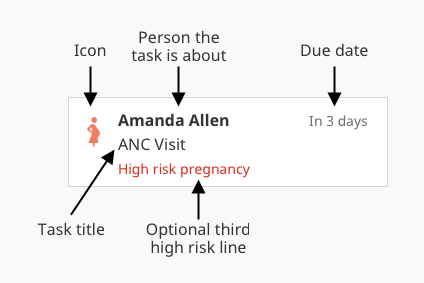

CHT Applications > Features > Tasks
Ensuring that the right actions are taken for the right people at the right time

Tasks are configured in the tasks.js file. This file is a JavaScript module which defines an array of objects conforming to the Task schema detailed below. When defining tasks, all the data about contacts on the device (both people and places) along with all their reports are available. Tasks are available only for users of type “restricted to their place”. Tasks can pull in fields from reports and pass data as inputs to the form that opens when the task is selected, enabling richer user experiences.
See Also: Tasks Overview
tasks.js| property | type | description | required |
|---|---|---|---|
name |
string |
A unique identifier for the task. Used for querying task completeness. | yes, unique |
icon |
string |
The icon to show alongside the task. Should correspond with a value defined in resources.json. |
no |
title |
translation key |
The title of the task (labeled above). | yes |
appliesTo |
'contacts' or 'reports' |
Do you want to emit one task per report, or one task per contact? This attribute controls the behavior of other properties herein. | yes |
appliesIf |
function(contact, report) |
If appliesTo: 'contacts', this function is invoked once per contact and report is undefined. If appliesTo: 'reports', this function is invoked once per report. Return true if the task should appear for the given documents. |
no |
appliesToType |
string[] |
Filters the contacts or reports for which appliesIf will be evaluated. If appliesTo: 'reports', this is an array of form codes. If appliesTo: 'contacts', this is an array of contact types. For example, ['person'] or ['clinic', 'health_center']. For example, ['pregnancy'] or ['P', 'pregnancy']. |
no |
contactLabel |
string or function(contact, report) |
Controls the label describing the subject of the task. Defaults to the name of the contact (contact.contact.name). |
no |
resolvedIf |
function(contact, report, event, dueDate) |
Return true to mark the task as “resolved”. A resolved task uses memory on the phone, but is not displayed. | yes |
events |
object[] |
An event is used to specify the timing of the task. | yes |
events[n].id |
string |
A descriptive identifier. Used for querying task completeness. | yes, unique |
events[n].days |
integer |
Number of days after the doc’s reported_date that the event is due |
yes, if dueDate is not set |
events[n].dueDate |
function(event, contact, report) |
Returns a Date object for the day when this event is due. |
yes, if days is not set |
events[n].start |
integer |
Number of days to show the task before it is due. | yes |
events[n].end |
integer |
Number of days to show the task after it is due. | yes |
actions |
object[] |
The actions (forms) that a user can access after clicking on a task. If you put multiple forms here, the user will see a task summary screen where they can select which action they would like to complete. | yes |
actions[n].type |
'report' or 'contact' |
When 'report', the action opens the given form. When 'contact', the action redirects to a contact’s profile page. Defaults to ‘report’. |
no |
actions[n].form |
string |
The code of the form that should open when you select the action. | yes |
actions[n].label |
translation key |
The label that should appear on the task summary screen if multiple actions are present. | no |
actions[n].modifyContent |
function (content, contact, report) |
Set the values on the content object to control the data which will be passed as inputs to the form which opens when the action is selected. |
no |
priority |
object or function(contact, report) returning object of same schema |
Controls the “high risk” line seen above. | no |
priority.level |
high or medium |
Tasks that are high will display a high risk icon with the task. Default: medium. |
no |
priority.label |
translation key |
Text shown with the task associated to the risk level. | no |
Utility functions in the Core Framework can make common tasks much easier. These are available only for Tasks and Targets. To use the function call Utils.<function-name>(<params>), for example Utils.addDate(report.reported_date, 10).
| Name | Description |
|---|---|
isTimely(date, event) |
Returns true if the given date is after the start date and before the end date of the event. |
addDate(date, days) |
Returns a new Date set to midnight the given number of days after the given date. If no date is given the date defaults to today. |
getLmpDate(doc) |
Attempts to work out the LMP from the given doc. If no LMP is given it defaults to four weeks before the reported_date. |
getSchedule(name) |
Returns the task schedule with the given name from the configuration. |
getMostRecentTimestamp(reports, form) |
Returns the reported_date of the most recent of the reports with form ID matching the given form. |
getMostRecentReport(reports, form) |
Like getMostRecentTimestamp but returns the report, not just the reported_date. |
isFormSubmittedInWindow(reports, form, start, end) |
Returns true if any of the given reports are for the given form and were reported after start and before end. |
isFirstReportNewer(firstReport, secondReport) |
Returns true if the firstReport was reported before the secondReport. |
isDateValid(date) |
Returns true if the given date is a validate JavaScript Date. |
now() |
Returns the current Date. |
MS_IN_DAY |
A constant for the number of milliseconds in a day. |
Please open an issue if you’d like other functions included.
Helper variables and functions can be defined in nools-extras.js, which is shared by both tasks.js and targets.js. The following are global variables that can be used:
| Variable | Description |
|---|---|
c.contact |
The contact’s doc. All contacts have type of either person or place. |
c.reports |
An array of all the reports submitted about the contact. |
console |
Useful for outputting debugging statements. Should not be used in production code. |
Utils |
Useful functions across projects are available, and describe in the Utils section. |
This sample tasks.js generates two postnatal-visit tasks for each delivery form. The tasks are due 7 and 14 days after the delivery report was submitted. Each task is displayed for 2 days before the due date and 2 days after the due date.
module.exports = [
{
icon: 'mother-child',
title: 'task.postnatal_followup',
appliesTo: 'reports',
appliesToType: [ 'delivery' ],
actions: [ { form: 'postnatal_visit' } ],
events: [
{
days:7, start:2, end:2,
},
{
days:14, start:2, end:2,
}
]
}
];
These samples show more complex tasks which use functions kepts in a separate nools-extras.js file
tasks.jsconst extras = require('./nools-extras');
const { isFormFromArraySubmittedInWindow } = extras;
module.exports = [
// PNC TASK 1: If a home delivery, needs clinic tasks
{
icon: 'mother-child',
title: [ { locale:'en', content:'Postnatal visit needed' } ],
appliesTo: 'reports',
appliesToType: [ 'D', 'delivery' ],
appliesIf: function(c, r) {
return isCoveredByUseCase(c.contact, 'pnc') &&
r.fields &&
r.fields.delivery_code &&
r.fields.delivery_code.toUpperCase() !== 'F';
},
actions: [{
form:'postnatal_visit',
// Pass content that will be used within the task form
modifyContent: function(content, c, r) {
content.delivery_place = 'home';
}
}],
events: [ {
days:0, start:0, end:4,
} ],
priority: {
level: 'high',
label: [ { locale:'en', content:'Home Birth' } ],
},
resolvedIf: function(c, r, event, dueDate) {
// Resolved if there a visit report received in time window or a newer pregnancy
return r.reported_date < extras.getNewestDeliveryTimestamp(c) ||
r.reported_date < extras.getNewestPregnancyTimestamp(c) ||
isFormFromArraySubmittedInWindow(c.reports, extras.postnatalForms,
Utils.addDate(dueDate, -event.start).getTime(),
Utils.addDate(dueDate, event.end+1).getTime());
},
},
// Option 1a: Place-based task: Family survey when place is created, then every 6 months
{
icon: 'family',
title: 'task.family_survey.title',
appliesTo: 'contacts',
appliesToType: [ 'clinic' ],
actions: [ { form:'family_survey' } ],
events: [ {
id: 'family-survey',
days:0, start:0, end:14,
} ],
resolvedIf: function(c, r, event, dueDate) {
// Resolved if there a family survey received in time window
return isFormFromArraySubmittedInWindow(c.reports, 'family_survey',
Utils.addDate(dueDate, -event.start).getTime(),
Utils.addDate(dueDate, event.end+1).getTime());
},
},
// Regular check for infants
{
icon: 'infant',
title: 'task.infant.title',
appliesTo: 'contacts',
appliesToType: [ 'person' ],
actions: [ { form:'infant_assessment' } ],
events: [
{
id: 'infant_asssessment-q1',
days:91, start:7, end:14,
},
{
id: 'infant_asssessment-q2',
days:182, start:7, end:14,
},
{
id: 'infant_asssessment-q3',
days:273, start:7, end:14,
},
{
id: 'infant_asssessment-q4',
days:365, start:7, end:14,
}
]
},
// Option 2: Place-based task: Family survey every 6 months
{
icon: 'family',
title: 'task.family_survey.title',
appliesTo: 'contacts',
appliesToType: [ 'clinic' ],
appliesIf: extras.needsFamilySurvey, // function returns true if family doesn't have survey in previous 6 months
actions: [ { form:'family_survey' } ],
events: [ {
id: 'family-survey',
start:0, end:14,
dueDate: extras.getNextFamilySurveyDate // function gets expected date of next family survey
} ],
resolvedIf: function(c, r, event, dueDate) {
// Resolved if there a family survey received in time window
return isFormFromArraySubmittedInWindow(c.reports, 'family_survey',
Utils.addDate(dueDate, -event.start).getTime(),
Utils.addDate(dueDate, event.end+1).getTime());
},
},
]
nools-extras.jsmodule.exports = {
isCoveredByUseCase: function (contact, usecase) {
// ...
},
getNewestDeliveryTimestamp: function (c) {
// ...
},
getNewestPregnancyTimestamp: function (c) {
// ...
},
isFormFromArraySubmittedInWindow: function (reports, formsArray, startTime, endTime) {
// ...
},
};
To build your tasks into your app, you must compile them into app-settings, then upload them to your instance.
medic-conf --local compile-app-settings backup-app-settings upload-app-settings
Ensuring that the right actions are taken for the right people at the right time
Building connections between people, actions, and data systems
This document covers the configuration best practices of forms, tasks, targets, and contact profiles when building your own community health app.
Was this page helpful?
Glad to hear it! Please tell us how we can improve.
Sorry to hear that. Please tell us how we can improve.